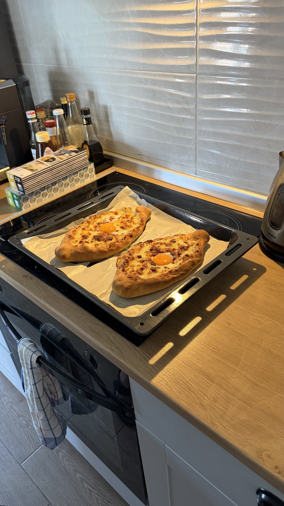
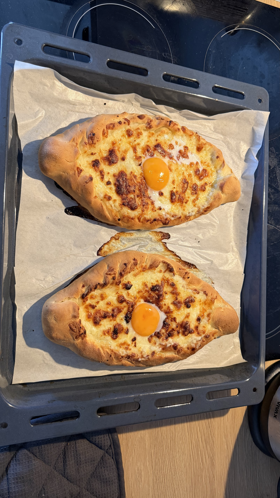

Аджарские хачапури «Облачные» лодочки
2 большие порции • Один противень
🌡 230°C
⏱ 2 ч
🍽 2
🥣 Тесто
400 г муки (T-400)
250 мл теплого молока
7 г сухих дрожжей
1 ст. л. сахара
½ ч. л. соли
30 г мягкого сливочного масла
🧀 Начинка
250 г Šumadijski mladi sir
150–200 г Mozzarella
100 г Carski sir
2 желтка
Сливочное масло
👨🍳 Приготовление
Смешайте теплое молоко, сахар и дрожжи. Оставьте на 10 минут до появления пены.
Просейте муку, добавьте соль, влейте дрожжевую смесь и масло. Вымешивайте 7–10 минут до мягкого эластичного теста.
Оставьте под полотенцем в тепле на 1–1,5 часа. Объем должен увеличиться примерно в 2,5 раза.
Разомните mladi sir вилкой, смешайте с моцареллой и Carski sir. При необходимости добавьте ложку молока.
Разделите тесто на две части, раскатайте овалы, сформируйте лодочки и защипните концы.
Заполните лодочки сырной смесью и выпекайте 12–15 минут при 230°C.
Сделайте углубление, положите желток и верните в духовку ровно на 1 минуту.
Сразу после духовки смажьте бортики сливочным маслом.
💡 Секрет идеального результата
Начинки должно быть не меньше, чем теста.
Желток должен остаться жидким.
Горячие бортики обязательно смазать сливочным маслом.
×


❮
❯